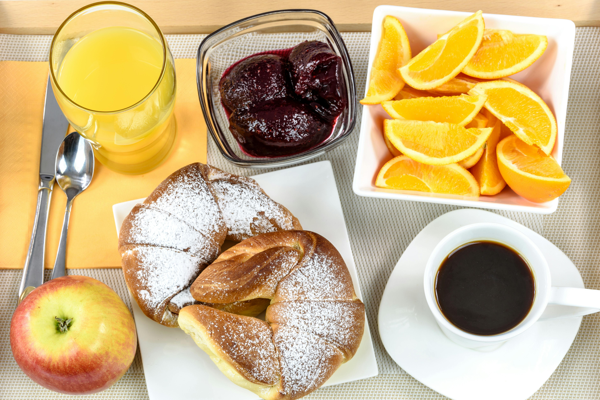
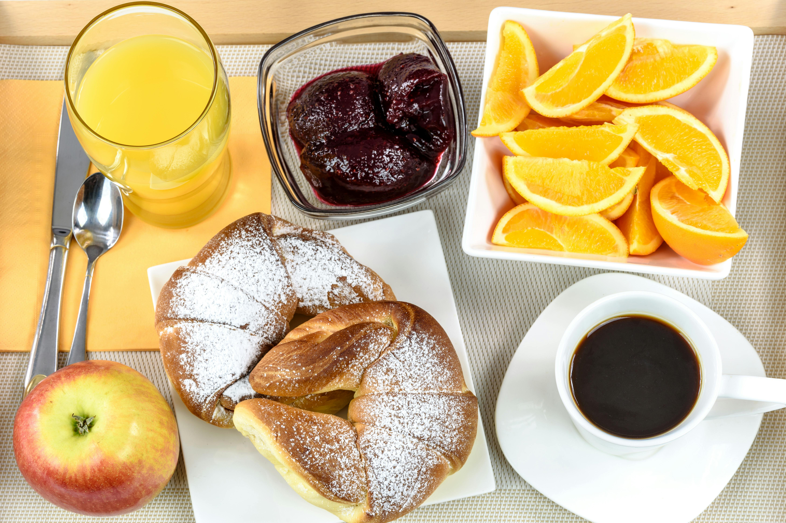

Breakfast Food
 



Breakfast is often considered the most important meal of the day, providing the essential nutrients and energy needed to kickstart your morning. Whether you prefer something sweet, savory, or a little bit of both, breakfast offers endless options to suit every taste. A well-balanced breakfast not only satisfies your hunger but also sets a positive tone for the rest of the day.
Breakfast foods vary widely around the world, but common choices include...
- Eggs
- Cereal
- Pastries
As well as beverages including...
- Coffee
- Juice
- Smoothies